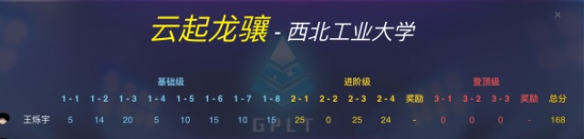

<!DOCTYPE html>
<html>
<head><meta name="generator" content="Hexo 3.8.0">
  <!-- hexo-inject:begin --><!-- hexo-inject:end --><meta charset="utf-8">
  
  <title>CCCC2019游记 | LoliconAutomaton&#39;s RabbitHouse</title>
  <meta name="viewport" content="width=device-width, initial-scale=1, maximum-scale=1">
  <meta name="description" content="Overview题出得不好，覆盖知识点单一（指L1和L2-2）  Can you AC L1-8?  AI: I can’t ac l1-8!  拼死拿了敝校二队第一，感觉比较好的题目是L2-3和L2-4，L3来不及想了，Fe滚粗日常膜九条可怜我的知乎回答 上午室友吃鸡至凌晨三点，睡眠严重不足……不过到了校车上感觉还行？？？听说某大佬六点睡觉，无限ym……校车上摸出高数作业，还是平时分比较重要然后">
<meta name="keywords" content="游记">
<meta property="og:type" content="article">
<meta property="og:title" content="CCCC2019游记">
<meta property="og:url" content="http://loliconautomaton.github.io/CCCC2019游记/index.html">
<meta property="og:site_name" content="LoliconAutomaton&#39;s RabbitHouse">
<meta property="og:description" content="Overview题出得不好，覆盖知识点单一（指L1和L2-2）  Can you AC L1-8?  AI: I can’t ac l1-8!  拼死拿了敝校二队第一，感觉比较好的题目是L2-3和L2-4，L3来不及想了，Fe滚粗日常膜九条可怜我的知乎回答 上午室友吃鸡至凌晨三点，睡眠严重不足……不过到了校车上感觉还行？？？听说某大佬六点睡觉，无限ym……校车上摸出高数作业，还是平时分比较重要然后">
<meta property="og:locale" content="zh-CN">
<meta property="og:image" content="http://loliconautomaton.github.io/images/wyyddxn.JPG">
<meta property="og:image" content="http://loliconautomaton.github.io/images/CCCC.JPG">
<meta property="og:updated_time" content="2019-04-01T12:27:18.000Z">
<meta name="twitter:card" content="summary">
<meta name="twitter:title" content="CCCC2019游记">
<meta name="twitter:description" content="Overview题出得不好，覆盖知识点单一（指L1和L2-2）  Can you AC L1-8?  AI: I can’t ac l1-8!  拼死拿了敝校二队第一，感觉比较好的题目是L2-3和L2-4，L3来不及想了，Fe滚粗日常膜九条可怜我的知乎回答 上午室友吃鸡至凌晨三点，睡眠严重不足……不过到了校车上感觉还行？？？听说某大佬六点睡觉，无限ym……校车上摸出高数作业，还是平时分比较重要然后">
<meta name="twitter:image" content="http://loliconautomaton.github.io/images/wyyddxn.JPG">
  
    <link rel="alternative" href="/" title="LoliconAutomaton&#39;s RabbitHouse" type="application/atom+xml">
  
  
    <link rel="icon" href="/favicon.png">
  
  <link rel="stylesheet" href="/css/style.css">
  <!--[if lt IE 9]><script src="//cdnjs.cloudflare.com/ajax/libs/html5shiv/3.7/html5shiv.min.js"></script><![endif]--><!-- hexo-inject:begin --><!-- hexo-inject:end -->
  
</head></html>
<body>
<!-- hexo-inject:begin --><!-- hexo-inject:end --><div id="container">
  <div id="wrap">
    <header id="header">
  <div id="banner"></div>
  <div id="header-outer" class="outer">
    <div id="header-title" class="inner">
      <h1 id="logo-wrap">
        <a href="/" id="logo">LoliconAutomaton&#39;s RabbitHouse</a>
      </h1>
      
        <h2 id="subtitle-wrap">
          <a href="/" id="subtitle">万念俱灰也是一种超脱——木心</a>
        </h2>
      
    </div>
    <div id="header-inner" class="inner">
      <nav id="main-nav">
        <a id="main-nav-toggle" class="nav-icon"></a>
        
          <a class="main-nav-link" href="/">Home</a>
        
          <a class="main-nav-link" href="/archives">Archives</a>
        
      </nav>
      <nav id="sub-nav">
        
          <a id="nav-rss-link" class="nav-icon" href="/" title="RSS Feed"></a>
        
        <a id="nav-search-btn" class="nav-icon" title="Search"></a>
      </nav>
      <div id="search-form-wrap">
        <form action="//www.baidu.com/baidu" method="get" accept-charset="utf-8" class="search-form">
          <input type="search" name="word" maxlength="20" class="search-form-input" placeholder="Search">
          <input type="submit" value="" class="search-form-submit">
          <input name="tn" type="hidden" value="bds">
          <input name="cl" type="hidden" value="3">
          <input name="ct" type="hidden" value="2097152">
          <input type="hidden" name="si" value="loliconautomaton.github.io">
        </form>
      </div>
    </div>
  </div>
</header>
    <div class="outer">
      <section id="main"><article id="post-CCCC2019游记" class="article article-type-post" itemscope="" itemprop="blogPost">
  <div class="article-meta">
    <a href="/CCCC2019游记/" class="article-date">
  <time datetime="2019-04-01T12:27:18.000Z" itemprop="datePublished">2019-04-01</time>
</a>
    
  <div class="article-category">
    <a class="article-category-link" href="/categories/游记/">游记</a>
  </div>

  </div>
  <div class="article-inner">
    
    
      <header class="article-header">
        
  
    <h1 class="article-title" itemprop="name">
      CCCC2019游记
    </h1>
  

      </header>
    
    <div class="article-entry" itemprop="articleBody">
      
        
        
          <h3 id="Overview"><a href="#Overview" class="headerlink" title="Overview"></a>Overview</h3><p>题出得不好，覆盖知识点单一（指L1和L2-2）</p>
<blockquote>
<p>Can you AC L1-8?<br>  AI: I can’t ac l1-8!</p>
</blockquote>
<p>拼死拿了敝校二队第一，感觉比较好的题目是L2-3和L2-4，L3来不及想了，Fe滚粗<br>日常膜九条可怜<br><a href="https://www.zhihu.com/question/318072788/answer/636655757" target="_blank" rel="noopener">我的知乎回答</a></p>
<h3 id="上午"><a href="#上午" class="headerlink" title="上午"></a>上午</h3><p>室友吃鸡至凌晨三点，睡眠严重不足……不过到了校车上感觉还行？？？听说某大佬六点睡觉，无限ym……<br>校车上摸出高数作业，还是平时分比较重要<br>然后就到了西电，看到了志愿者小姐姐，好漂亮啊qwq<br>然后在旁边等带队老师的时候观望其他学校，woc怎么妹子这么多，西北农林科技大学的小姐姐都好好看啊p_q，我到底来了一个什么学校啊……直到下午看到西电代表队，啊呀还有比我们惨的啊，不怕不怕啦（不过想一想我们这一届的女队好像已经凉了），莫名想到小孩游神的443……<br>西电的食堂还是挺不错的，有一家奶茶店，震惊！参赛选手集体买奶茶！不过我一不小心把餐券全部给鸡排饭了（实际上并没有花完），因此没有去买奶茶，好在我也不是很喜欢喝奶茶。<br></p>
<h3 id="下午"><a href="#下午" class="headerlink" title="下午"></a>下午</h3><p>开题开题，L1的字符串题真的有点多，从敲笨钟开始，虽然就是一个小小的分词技巧，但是真的很不爽。然后一直做到L1-8，woc这啥题啊……现在想想我直接在字符串里面replace可能会比分词以后再处理更好。<br>然后去开L2，感觉1是什么很玄的dp？2一眼就知道要求LCA，但是那个输入直接把我劝退了，3好像很可做啊，快来BFS一波吧！诶怎么只有18分，难道不是1为起点吗？？？4看了一眼感觉有点奇怪。<br>然后去看L3，1看不懂，2的话好像就是表达式树变成了表达式图，但是我也不会做，3看了一眼输入就走了<br>重新去写L2-1，看了一下发现自己读错题，终于把模拟写出来了，仔细想了一下满足条件的数应该不会很多，先全部求出来然后把依附于其他数的标记一下开了各种set以及标记数组居然1A了，我的码力什么时候变成这样了？？？然后去写L2-4，发现就是入栈顺序是<code>1 2 3 4 5 6 7</code>，问给出的出栈顺序对不对，然后就愉快地过了。然后去怼L2-3，尝试了BFS、Dijkstra、树的DFS都没有过，最后时刻灵机一动给树加上了双向边就过了，好吧……赛后听说其实是入读为0的才是起点（对哦……），然后这个是算数据弱了吗？<br>最后本蒻168分滚粗……赛后听说了L3-1是floyed，L3-2是dsu on tree，L3-3是双人TSP，jls最后16s阿克，并且最后一题的评分压过标准线0.1分真的太强辣<br></p>
<h3 id="后记"><a href="#后记" class="headerlink" title="后记"></a>后记</h3><p>这次的总结是L1和L2的算法都能比较快得给出，但是码力比较差，容易被字符串题搞崩心态（确信）<br>这辈子再也不想做字符串题了</p>

        
      
    </div>
    <footer class="article-footer">
      
        <a data-url="http://loliconautomaton.github.io/CCCC2019游记/" data-id="cjzdhhtio000cn4u7s2cvxo0w" class="article-share-link">分享到</a>
      

      

      
  <ul class="article-tag-list"><li class="article-tag-list-item"><a class="article-tag-list-link" href="/tags/游记/">游记</a></li></ul>

    </footer>
  </div>
  
    
<nav id="article-nav">
  
    <a href="/写在2019年4月选考之后/" id="article-nav-newer" class="article-nav-link-wrap">
      <strong class="article-nav-caption">下一篇</strong>
      <div class="article-nav-title">
        
          写在2019年4月选考之后
        
      </div>
    </a>
  
  
    <a href="/逛画展/" id="article-nav-older" class="article-nav-link-wrap">
      <strong class="article-nav-caption">上一篇</strong>
      <div class="article-nav-title">逛画展</div>
    </a>
  
</nav>

  
</article>


<!-- LiveRe City install code -->
<div id="lv-container" data-id="city" data-uid="MTAyMC80MTk5Ni8xODU0Mw==">
	<script type="text/javascript">
   (function(d, s) {
       var j, e = d.getElementsByTagName(s)[0];

       if (typeof LivereTower === 'function') { return; }

       j = d.createElement(s);
       j.src = 'https://cdn-city.livere.com/js/embed.dist.js';
       j.async = true;

       e.parentNode.insertBefore(j, e);
   })(document, 'script');
	</script>
<noscript> Please activate JavaScript for write a comment in LiveRe</noscript>
</div>
<!-- completed City install code -->
</section>
      
      <aside id="sidebar">
  
    
  <div class="widget-wrap">
    <h3 class="widget-title">分类</h3>
    <div class="widget">
      <ul class="category-list"><li class="category-list-item"><a class="category-list-link" href="/categories/ACG/">ACG</a><span class="category-list-count">3</span></li><li class="category-list-item"><a class="category-list-link" href="/categories/AtCoder/">AtCoder</a><span class="category-list-count">1</span></li><li class="category-list-item"><a class="category-list-link" href="/categories/BZOJ/">BZOJ</a><span class="category-list-count">3</span></li><li class="category-list-item"><a class="category-list-link" href="/categories/CodeChef/">CodeChef</a><span class="category-list-count">2</span></li><li class="category-list-item"><a class="category-list-link" href="/categories/Codeforces/">Codeforces</a><span class="category-list-count">11</span></li><li class="category-list-item"><a class="category-list-link" href="/categories/Hello-world/">Hello, world!</a><span class="category-list-count">1</span></li><li class="category-list-item"><a class="category-list-link" href="/categories/Regional/">Regional</a><span class="category-list-count">4</span></li><li class="category-list-item"><a class="category-list-link" href="/categories/UOJ/">UOJ</a><span class="category-list-count">1</span></li><li class="category-list-item"><a class="category-list-link" href="/categories/冻态硅化/">冻态硅化</a><span class="category-list-count">4</span></li><li class="category-list-item"><a class="category-list-link" href="/categories/分块/">分块</a><span class="category-list-count">1</span></li><li class="category-list-item"><a class="category-list-link" href="/categories/奶牛题/">奶牛题</a><span class="category-list-count">2</span></li><li class="category-list-item"><a class="category-list-link" href="/categories/寒假作业/">寒假作业</a><span class="category-list-count">1</span></li><li class="category-list-item"><a class="category-list-link" href="/categories/数据结构/">数据结构</a><span class="category-list-count">2</span></li><li class="category-list-item"><a class="category-list-link" href="/categories/数论/">数论</a><span class="category-list-count">3</span></li><li class="category-list-item"><a class="category-list-link" href="/categories/文学/">文学</a><span class="category-list-count">2</span></li><li class="category-list-item"><a class="category-list-link" href="/categories/机器学习/">机器学习</a><span class="category-list-count">1</span></li><li class="category-list-item"><a class="category-list-link" href="/categories/杂文/">杂文</a><span class="category-list-count">2</span></li><li class="category-list-item"><a class="category-list-link" href="/categories/游记/">游记</a><span class="category-list-count">6</span></li></ul>
    </div>
  </div>

  
    
  <div class="widget-wrap">
    <h3 class="widget-title">标签</h3>
    <div class="widget">
      <ul class="tag-list"><li class="tag-list-item"><a class="tag-list-link" href="/tags/01背包/">01背包</a><span class="tag-list-count">1</span></li><li class="tag-list-item"><a class="tag-list-link" href="/tags/BZOJ/">BZOJ</a><span class="tag-list-count">2</span></li><li class="tag-list-item"><a class="tag-list-link" href="/tags/CDQ分治/">CDQ分治</a><span class="tag-list-count">1</span></li><li class="tag-list-item"><a class="tag-list-link" href="/tags/CodeChef/">CodeChef</a><span class="tag-list-count">2</span></li><li class="tag-list-item"><a class="tag-list-link" href="/tags/Codeforces/">Codeforces</a><span class="tag-list-count">9</span></li><li class="tag-list-item"><a class="tag-list-link" href="/tags/Hello/">Hello</a><span class="tag-list-count">1</span></li><li class="tag-list-item"><a class="tag-list-link" href="/tags/KMP/">KMP</a><span class="tag-list-count">2</span></li><li class="tag-list-item"><a class="tag-list-link" href="/tags/LCA/">LCA</a><span class="tag-list-count">1</span></li><li class="tag-list-item"><a class="tag-list-link" href="/tags/Regional/">Regional</a><span class="tag-list-count">2</span></li><li class="tag-list-item"><a class="tag-list-link" href="/tags/UOJ/">UOJ</a><span class="tag-list-count">1</span></li><li class="tag-list-item"><a class="tag-list-link" href="/tags/kNN/">kNN</a><span class="tag-list-count">1</span></li><li class="tag-list-item"><a class="tag-list-link" href="/tags/min-25筛/">min_25筛</a><span class="tag-list-count">1</span></li><li class="tag-list-item"><a class="tag-list-link" href="/tags/set/">set</a><span class="tag-list-count">1</span></li><li class="tag-list-item"><a class="tag-list-link" href="/tags/书评/">书评</a><span class="tag-list-count">1</span></li><li class="tag-list-item"><a class="tag-list-link" href="/tags/二分答案/">二分答案</a><span class="tag-list-count">2</span></li><li class="tag-list-item"><a class="tag-list-link" href="/tags/冻态硅化/">冻态硅化</a><span class="tag-list-count">4</span></li><li class="tag-list-item"><a class="tag-list-link" href="/tags/出题/">出题</a><span class="tag-list-count">1</span></li><li class="tag-list-item"><a class="tag-list-link" href="/tags/分块/">分块</a><span class="tag-list-count">1</span></li><li class="tag-list-item"><a class="tag-list-link" href="/tags/图论/">图论</a><span class="tag-list-count">1</span></li><li class="tag-list-item"><a class="tag-list-link" href="/tags/字符串/">字符串</a><span class="tag-list-count">1</span></li><li class="tag-list-item"><a class="tag-list-link" href="/tags/容斥/">容斥</a><span class="tag-list-count">1</span></li><li class="tag-list-item"><a class="tag-list-link" href="/tags/差分/">差分</a><span class="tag-list-count">3</span></li><li class="tag-list-item"><a class="tag-list-link" href="/tags/平衡树/">平衡树</a><span class="tag-list-count">1</span></li><li class="tag-list-item"><a class="tag-list-link" href="/tags/影评/">影评</a><span class="tag-list-count">2</span></li><li class="tag-list-item"><a class="tag-list-link" href="/tags/思维/">思维</a><span class="tag-list-count">2</span></li><li class="tag-list-item"><a class="tag-list-link" href="/tags/打表/">打表</a><span class="tag-list-count">1</span></li><li class="tag-list-item"><a class="tag-list-link" href="/tags/扫描线/">扫描线</a><span class="tag-list-count">1</span></li><li class="tag-list-item"><a class="tag-list-link" href="/tags/拓扑排序/">拓扑排序</a><span class="tag-list-count">1</span></li><li class="tag-list-item"><a class="tag-list-link" href="/tags/数位dp/">数位dp</a><span class="tag-list-count">1</span></li><li class="tag-list-item"><a class="tag-list-link" href="/tags/数据结构/">数据结构</a><span class="tag-list-count">1</span></li><li class="tag-list-item"><a class="tag-list-link" href="/tags/数论/">数论</a><span class="tag-list-count">1</span></li><li class="tag-list-item"><a class="tag-list-link" href="/tags/日常/">日常</a><span class="tag-list-count">1</span></li><li class="tag-list-item"><a class="tag-list-link" href="/tags/时评/">时评</a><span class="tag-list-count">1</span></li><li class="tag-list-item"><a class="tag-list-link" href="/tags/暴力/">暴力</a><span class="tag-list-count">1</span></li><li class="tag-list-item"><a class="tag-list-link" href="/tags/期望/">期望</a><span class="tag-list-count">1</span></li><li class="tag-list-item"><a class="tag-list-link" href="/tags/期望dp/">期望dp</a><span class="tag-list-count">1</span></li><li class="tag-list-item"><a class="tag-list-link" href="/tags/构造/">构造</a><span class="tag-list-count">2</span></li><li class="tag-list-item"><a class="tag-list-link" href="/tags/树/">树</a><span class="tag-list-count">1</span></li><li class="tag-list-item"><a class="tag-list-link" href="/tags/树链剖分/">树链剖分</a><span class="tag-list-count">1</span></li><li class="tag-list-item"><a class="tag-list-link" href="/tags/模拟/">模拟</a><span class="tag-list-count">1</span></li><li class="tag-list-item"><a class="tag-list-link" href="/tags/毒瘤/">毒瘤</a><span class="tag-list-count">1</span></li><li class="tag-list-item"><a class="tag-list-link" href="/tags/游记/">游记</a><span class="tag-list-count">5</span></li><li class="tag-list-item"><a class="tag-list-link" href="/tags/滑动窗口/">滑动窗口</a><span class="tag-list-count">2</span></li><li class="tag-list-item"><a class="tag-list-link" href="/tags/番剧/">番剧</a><span class="tag-list-count">3</span></li><li class="tag-list-item"><a class="tag-list-link" href="/tags/社会/">社会</a><span class="tag-list-count">1</span></li><li class="tag-list-item"><a class="tag-list-link" href="/tags/离散化/">离散化</a><span class="tag-list-count">1</span></li><li class="tag-list-item"><a class="tag-list-link" href="/tags/积性函数/">积性函数</a><span class="tag-list-count">1</span></li><li class="tag-list-item"><a class="tag-list-link" href="/tags/线段树/">线段树</a><span class="tag-list-count">4</span></li><li class="tag-list-item"><a class="tag-list-link" href="/tags/组合数学/">组合数学</a><span class="tag-list-count">1</span></li><li class="tag-list-item"><a class="tag-list-link" href="/tags/置换/">置换</a><span class="tag-list-count">1</span></li><li class="tag-list-item"><a class="tag-list-link" href="/tags/莫比乌斯反演/">莫比乌斯反演</a><span class="tag-list-count">1</span></li><li class="tag-list-item"><a class="tag-list-link" href="/tags/莫队算法/">莫队算法</a><span class="tag-list-count">1</span></li><li class="tag-list-item"><a class="tag-list-link" href="/tags/贪心/">贪心</a><span class="tag-list-count">1</span></li><li class="tag-list-item"><a class="tag-list-link" href="/tags/高精度/">高精度</a><span class="tag-list-count">1</span></li></ul>
    </div>
  </div>

  
    
  <div class="widget-wrap">
    <h3 class="widget-title">标签云</h3>
    <div class="widget tagcloud">
      <a href="/tags/01背包/" style="font-size: 10px;">01背包</a> <a href="/tags/BZOJ/" style="font-size: 12px;">BZOJ</a> <a href="/tags/CDQ分治/" style="font-size: 10px;">CDQ分治</a> <a href="/tags/CodeChef/" style="font-size: 12px;">CodeChef</a> <a href="/tags/Codeforces/" style="font-size: 20px;">Codeforces</a> <a href="/tags/Hello/" style="font-size: 10px;">Hello</a> <a href="/tags/KMP/" style="font-size: 12px;">KMP</a> <a href="/tags/LCA/" style="font-size: 10px;">LCA</a> <a href="/tags/Regional/" style="font-size: 12px;">Regional</a> <a href="/tags/UOJ/" style="font-size: 10px;">UOJ</a> <a href="/tags/kNN/" style="font-size: 10px;">kNN</a> <a href="/tags/min-25筛/" style="font-size: 10px;">min_25筛</a> <a href="/tags/set/" style="font-size: 10px;">set</a> <a href="/tags/书评/" style="font-size: 10px;">书评</a> <a href="/tags/二分答案/" style="font-size: 12px;">二分答案</a> <a href="/tags/冻态硅化/" style="font-size: 16px;">冻态硅化</a> <a href="/tags/出题/" style="font-size: 10px;">出题</a> <a href="/tags/分块/" style="font-size: 10px;">分块</a> <a href="/tags/图论/" style="font-size: 10px;">图论</a> <a href="/tags/字符串/" style="font-size: 10px;">字符串</a> <a href="/tags/容斥/" style="font-size: 10px;">容斥</a> <a href="/tags/差分/" style="font-size: 14px;">差分</a> <a href="/tags/平衡树/" style="font-size: 10px;">平衡树</a> <a href="/tags/影评/" style="font-size: 12px;">影评</a> <a href="/tags/思维/" style="font-size: 12px;">思维</a> <a href="/tags/打表/" style="font-size: 10px;">打表</a> <a href="/tags/扫描线/" style="font-size: 10px;">扫描线</a> <a href="/tags/拓扑排序/" style="font-size: 10px;">拓扑排序</a> <a href="/tags/数位dp/" style="font-size: 10px;">数位dp</a> <a href="/tags/数据结构/" style="font-size: 10px;">数据结构</a> <a href="/tags/数论/" style="font-size: 10px;">数论</a> <a href="/tags/日常/" style="font-size: 10px;">日常</a> <a href="/tags/时评/" style="font-size: 10px;">时评</a> <a href="/tags/暴力/" style="font-size: 10px;">暴力</a> <a href="/tags/期望/" style="font-size: 10px;">期望</a> <a href="/tags/期望dp/" style="font-size: 10px;">期望dp</a> <a href="/tags/构造/" style="font-size: 12px;">构造</a> <a href="/tags/树/" style="font-size: 10px;">树</a> <a href="/tags/树链剖分/" style="font-size: 10px;">树链剖分</a> <a href="/tags/模拟/" style="font-size: 10px;">模拟</a> <a href="/tags/毒瘤/" style="font-size: 10px;">毒瘤</a> <a href="/tags/游记/" style="font-size: 18px;">游记</a> <a href="/tags/滑动窗口/" style="font-size: 12px;">滑动窗口</a> <a href="/tags/番剧/" style="font-size: 14px;">番剧</a> <a href="/tags/社会/" style="font-size: 10px;">社会</a> <a href="/tags/离散化/" style="font-size: 10px;">离散化</a> <a href="/tags/积性函数/" style="font-size: 10px;">积性函数</a> <a href="/tags/线段树/" style="font-size: 16px;">线段树</a> <a href="/tags/组合数学/" style="font-size: 10px;">组合数学</a> <a href="/tags/置换/" style="font-size: 10px;">置换</a> <a href="/tags/莫比乌斯反演/" style="font-size: 10px;">莫比乌斯反演</a> <a href="/tags/莫队算法/" style="font-size: 10px;">莫队算法</a> <a href="/tags/贪心/" style="font-size: 10px;">贪心</a> <a href="/tags/高精度/" style="font-size: 10px;">高精度</a>
    </div>
  </div>

  
    
  <div class="widget-wrap">
    <h3 class="widget-title">归档</h3>
    <div class="widget">
      <ul class="archive-list"><li class="archive-list-item"><a class="archive-list-link" href="/archives/2019/08/">2019.08</a><span class="archive-list-count">10</span></li><li class="archive-list-item"><a class="archive-list-link" href="/archives/2019/07/">2019.07</a><span class="archive-list-count">3</span></li><li class="archive-list-item"><a class="archive-list-link" href="/archives/2019/06/">2019.06</a><span class="archive-list-count">8</span></li><li class="archive-list-item"><a class="archive-list-link" href="/archives/2019/05/">2019.05</a><span class="archive-list-count">6</span></li><li class="archive-list-item"><a class="archive-list-link" href="/archives/2019/04/">2019.04</a><span class="archive-list-count">3</span></li><li class="archive-list-item"><a class="archive-list-link" href="/archives/2019/03/">2019.03</a><span class="archive-list-count">9</span></li><li class="archive-list-item"><a class="archive-list-link" href="/archives/2019/02/">2019.02</a><span class="archive-list-count">7</span></li><li class="archive-list-item"><a class="archive-list-link" href="/archives/2019/01/">2019.01</a><span class="archive-list-count">4</span></li></ul>
    </div>
  </div>

  
    
  <div class="widget-wrap">
    <h3 class="widget-title">近期文章</h3>
    <div class="widget">
      <ul>
        
          <li>
            <a href="/CF343D/">Codeforces 343D</a>
          </li>
        
          <li>
            <a href="/AUG2019B/">CodeChef Auguest Challenge 2019 Div.2 题解</a>
          </li>
        
          <li>
            <a href="/NWPU2019个人排位赛1C/">NWPU2019个人排位赛1C</a>
          </li>
        
          <li>
            <a href="/CF1200/">Codeforces Round 578</a>
          </li>
        
          <li>
            <a href="/ICPC2017-Asia-Urumqi/">ICPC2017 Asia Urumqi</a>
          </li>
        
      </ul>
    </div>
  </div>

  
    
  <div class="widget-wrap">
    <h3 class="widget-title">友情链接</h3>
    <div class="widget">
      <ul>
        
          <li>
            <a href="http://arvinxiang.com" target="_blank">主题作者</a>
          </li>
        
          <li>
            <a href="https://zhuanlan.zhihu.com/galahad" target="_blank">笔者知乎</a>
          </li>
        
          <li>
            <a href="http://blog.flyinthesky.win/" target="_blank">FlyInTheSky</a>
          </li>
        
          <li>
            <a href="https://isecloud.github.io/" target="_blank">isecloud</a>
          </li>
        
          <li>
            <a href="https://herano.github.io/" target="_blank">HeRaNO@UESTC</a>
          </li>
        
      </ul>
    </div>
  </div>

  
  
    <div>
      <iframe frameborder="no" border="0" marginwidth="0" marginheight="0" width="100%" height="86" src="//music.163.com/outchain/player?type=2&id=490182455&auto=1&height=66"></iframe>
    </div>
  
</aside>
      
    </div>
    <footer id="footer">
  <script async src="https://busuanzi.ibruce.info/busuanzi/2.3/busuanzi.pure.mini.js">
  </script>
  
  <div class="outer">
    <div id="footer-info" class="inner">
      &copy; 2019 LoliconAutomaton<br>
      Powered by <a href="//hexo.io/" target="_blank">Hexo</a>
      .
      Theme by <a href="https://github.com/xiangming/landscape-plus" target="_blank">Landscape-plus</a><br>
      
      <span id="busuanzi_container_site_pv">
          总访问量 <a href="http://service.ibruce.info/" target="_blank"><span id="busuanzi_value_site_pv"></span></a> 次
        </span>
        <span id="busuanzi_container_site_uv">
          <a href="http://service.ibruce.info/" target="_blank"><span id="busuanzi_value_site_uv"></span></a> 人.
        </span>
        
        
    </div>
  </div>
</footer>
  </div>
  <nav id="mobile-nav">
  
    <a href="/" class="mobile-nav-link">Home</a>
  
    <a href="/archives" class="mobile-nav-link">Archives</a>
  
</nav>
  <!-- totop start -->
<div id="totop">
<a title="返回顶部"></a>
</div>

<!-- totop end -->


<!-- 百度分享 start -->

<!-- 百度分享 end -->

<script src="//cdnjs.cloudflare.com/ajax/libs/jquery/1.11.1/jquery.min.js"></script>


  <link rel="stylesheet" href="/fancybox/jquery.fancybox.css">
  <script src="/fancybox/jquery.fancybox.pack.js"></script>


<! -- mathjax config similar to math.stackexchange -->

<script type="text/x-mathjax-config">
MathJax.Hub.Config({
tex2jax: {
          inlineMath: [ ['$','$'], ["\\(","\\)"]  ],
                processEscapes: true
                    
}
  
        });
</script>

<script type="text/x-mathjax-config">
MathJax.Hub.Config({
tex2jax: {
            skipTags: ['script', 'noscript', 'style', 'textarea', 'pre', 'code']
                  
}
    
        });
</script>

<script type="text/x-mathjax-config">
MathJax.Hub.Queue(function() {
            var all = MathJax.Hub.getAllJax(), i;
            for(i=0; i < all.length; i += 1) {
                            all[i].SourceElement().parentNode.className += ' has-jax';
                                    
            }
                
        });
</script>

<script type="text/javascript" src="//cdn.bootcss.com/mathjax/2.5.3/MathJax.js?config=TeX-AMS-MML_HTMLorMML">
</script>


<script src="/js/script.js"></script>

</div><!-- hexo-inject:begin --><!-- hexo-inject:end -->
</body>
</html>
